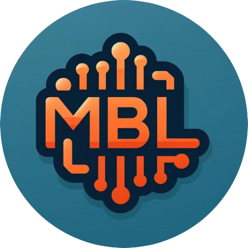

J’ai une idée ou une démarche à digitaliser.
On vous aide à rendre votre projet clair, présentable et réalisable, sans vocabulaire technique inutile.

MY BUSINESS LIFE Digital, organisation, croissanceMY BUSINESS LIFE
Sites web, automatisations, outils métier, stratégie, accompagnement et supports digitaux : nous construisons les solutions qui vous aident à avancer, vendre, organiser et piloter avec confiance.
Vous vous reconnaissez ici
MY BUSINESS LIFE vous aide à passer d’un besoin parfois flou à un plan concret, que vous cherchiez à lancer, structurer, moderniser ou accélérer.
On vous aide à rendre votre projet clair, présentable et réalisable, sans vocabulaire technique inutile.
Site, prise de rendez-vous, suivi client, supports : votre activité devient plus lisible.
Process, automatisations, CRM, outils métier et tableaux de bord adaptés à vos usages.
On structure le socle digital pour que votre croissance ne repose pas sur des outils dispersés.
Ce que nous faisons
Vous n’avez pas besoin de choisir une catégorie avant de nous parler. Nous identifions ce qui vous fera réellement avancer, puis nous construisons l’ensemble le plus cohérent.
Clarifier vos objectifs, vos priorités, vos blocages et le chemin le plus rentable.
Créer une présence crédible, élégante et pensée pour transformer les visiteurs en contacts.
Connecter vos outils, réduire la saisie, automatiser les relances et fluidifier le quotidien.
Construire l’interface dont votre activité a vraiment besoin, sans fonctionnalités parasites.
Mieux gérer les demandes, les ventes, les interventions, les données et les décisions.
Rendre votre message plus clair avec des supports modernes, cohérents et professionnels.
À propos de MBL
MY BUSINESS LIFE réunit conseil, design, automatisation et développement pour transformer une idée, un besoin ou une activité en système clair. Notre rôle : comprendre votre réalité, simplifier les décisions et créer des solutions utiles, élégantes et durables.
Lancer un diagnosticExpérience MBL
Le meilleur digital n’est pas celui qui impressionne le plus. C’est celui qui vous aide à prendre de meilleures décisions, à gagner du temps et à créer une relation plus simple avec vos clients, vos équipes ou vos projets.
Parler de mon besoinOn part de votre quotidien, de vos contraintes et de votre niveau de maturité digitale.
On transforme le besoin en parcours simple, beau, logique et facile à utiliser.
On livre des supports, pages ou outils propres, performants et maintenables.
On améliore avec vous, au rythme de votre activité et de vos nouvelles priorités.
Résultat attendu
Vos offres, vos parcours et vos priorités deviennent lisibles.
Votre présence inspire confiance dès les premières secondes.
Les tâches répétitives reculent, les décisions avancent.
Votre solution peut grandir avec votre activité, pas contre elle.
Diagnostic en ligne
Votre besoin peut être un site, une automatisation, un outil interne, une stratégie ou simplement une meilleure manière d’organiser votre projet. Le diagnostic sert à choisir la bonne prochaine action.
Un premier échange pour cartographier vos priorités et repérer les gains rapides.
Particulier, indépendant, entreprise ou projet en lancement.
Visibilité, organisation, outils, conversion, suivi client ou temps perdu.
Un plan clair : quoi faire, dans quel ordre, avec quel niveau de priorité.
Ressource gratuite
Notre ebook vous aide à repérer les pertes de temps, les abonnements inutiles, les doubles saisies et les opportunités d’automatisation.
10 pages pour poser le bon diagnostic avant de choisir vos prochains outils.
Questions fréquentes
Oui. Un particulier peut venir avec une idée, un besoin d’accompagnement digital, une démarche à simplifier ou un projet à rendre concret.
Non. L’étude gratuite sert à clarifier votre besoin avant de parler solution, budget ou planning.
Oui. Nous pouvons améliorer l’existant, connecter des outils, refondre une page, automatiser un flux ou concevoir un système plus complet.
Non. Il sert à comprendre votre situation et à vous donner une première lecture claire des prochaines étapes possibles.
Étude gratuite